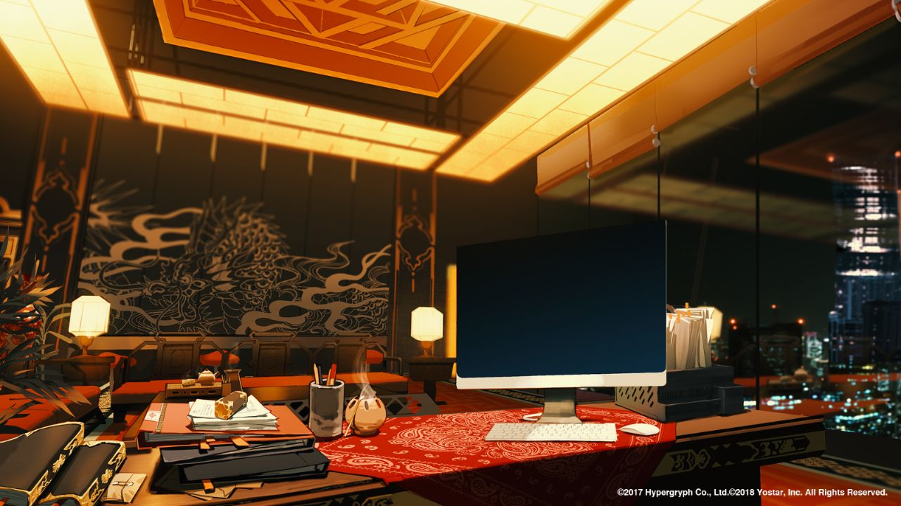

少前2 · 艾莫个人空间

工作椅挨着终端、生活物件挨着座位和床、柜子沿墙，能够读出人实际如何使用房间。营地借这些关系，缩减住宅软装、杂物与设备数量。
查看文件出处重点看工作、生活、储物如何成组，以及近景物件、中景焦点、窗外远景如何分配。以下为实际游戏背景参考，尚未作为项目运行素材。
工作椅挨着终端、生活物件挨着座位和床、柜子沿墙，能够读出人实际如何使用房间。营地借这些关系，缩减住宅软装、杂物与设备数量。
查看文件出处
大工作面压住视觉焦点，文件、笔具围着工作位置摆，城市只是窗边远景。借构图与功能关系，舍弃龙纹、雕饰、锦纹与满屏橙光。
查看官方出处
形体由大色面与松动边缘概括，清晰度按距离和功能分配。借画法和设备组关系，不搬满房间的屏幕与机械零件。
查看官方出处保持约百年后的后现代城外驻扎设定；去掉无用途符号。主视觉仍在整改，本页用于确定物件与空间关系。